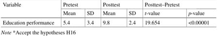

|
Title: Utilising and adapting IoT technology in secondary education in the
United States Name: Bee Teck Ivan Chua Contents Introduction: Page 2 Aim: Page 2 Research Strategy and
Methodology: Page 3 Findings: Page 4 Comparing the adoption
of IoT technology in US secondary education to the rest of the world : Page 4 What are the benefits
of using and adopting IoT technology in secondary education: Page 7 Issues and challenges
associated with IoT technology in secondary education: Page 9 Conclusion: Page 11 References :
Page 12 Total Literature Review word count: 1964 Introduction The internet of things (IoT) has gradually become
an integral part of society in recent years. IoT technology is used in a wide
range of applications, such as manufacturing, transportation, and healthcare.
In the field of education, IoT technology may not be the front line as compared
to home automation and industrial sectors, but it is gaining traction by
switching to smart campuses (Canbaz et al., 2022). This statement is further
supported by Haleem et al. (2022) that learning has become more engaging and
fun thanks to the use of IoT in the classroom. With the pandemic outbreak, schools were forced
to shut down, and the students had to go online to continue with their
studies, and this too has expedited the adoption of IoT technology (Siakalli
et al., 2022) IoT in education has also evolved to smart
education, whereby education is facilitated by smart technologies like Big
Data, IoT technologies and cloud computing, culminating in an intelligent
learning institution where hardware, software, network, and storage are
integrated to provide an interactive educational environment for all students
(Hashey & Stahl., 2019). Aim This literature review aims to examine the
adoption of IoT technologies in the United States (US) secondary education as
compared to the rest of the world, the benefits of introducing such
technology to the school, the challenges associated with it, and how these
challenges can be overcome by the school or the relevant parties. Research Strategy and Methodology The methodology for this literature review uses emerging
technology-focused resources and to cater to diverse data types; the Emerging
Synthesis (Schick-Makaroff et al., 2016) research methodology was chosen as
it includes qualitative, quantitative and other types of data like
commentaries, policies, etc. The following research questions are posed: 1.
What is the utilising and
adopting of IoT technology in secondary education in the US as compared to
the rest of the world 2.
What are the benefits of
using and adopting IoT technology in secondary school? 3.
What are the issues and
challenges associated with IoT technology For this literature review, online searches were done using Google
Scholar, the ACM Digital Library, Research Gate and IEEE Xplore. To stay up
to date, most articles published between 2015 and 2022 were considered. Findings Table 1 shows the sources found when the research
questions were used to search the databases. The chosen literature was then
carefully reviewed to find new references that fit the research questions and
provide additional information.
Table 1: Summary of the result found based on
keywords Comparing the adoption of IoT technology in US secondary education to
the rest of the world While there is an increase in the adoption of IoT
technologies in education worldwide, we want to see how the US is faring
compared to other countries. As shown in Figure 1, there has been an increase
in the teaching of emerging technology like IoT (Mechelen et al., 2022) over
the years in secondary education, especially between 2018 and 2020. Figure 1. Distribution of per technology and
publication year Concerning geographical distribution as shown in
Figure 2. where 30 countries are represented, and the United States alone is
represented by one-fifth as compared to the rest. Figure 2. Geographical distribution of the
records across continents Also, as shown in Figure 3., North America is one
of the most significant contributors to IoT in the education sector. Figure 3. IoT in Education Market by Solutions & Services by MarketsandMarkets Mechelen et al. (2022) highlight that students in
the secondary sector, as shown in Figure 4, have the highest engagement in
emerging technologies like IoT compared to the rest of the cohorts. However,
it did not specify which geographical distribution, but it can be inferred
from Figure 2. that secondary students from the United States have the
highest adoption (20%) of emerging technologies in education as a single
country.
Figure 4. Number of records across different
levels of education. What are the
benefits of using and adopting IoT technology in secondary education In a study by Carstens et al. (2021) analysing
the effect of technology on students, secondary teachers were surveyed if it
was helping or hindering their students. The result showed that the students
were more engaged and comfortable with using technology. In addition, it was
reported by the teachers that there were more communication and collaboration
among the students because of the use of technology, as shown in Figure 3. Figure 3. How technology is being used in the
classroom The above statement is further supported by
Klopfer et al. (2009). They stated, "many students in this group are
using new media and technologies to create new things in new ways, learn new
things in new ways, and communicate in new ways with new people-behaviours
that have become hardwired in their ways of thinking and operating in the
world". Using technology also allows the students to be more comfortable
in learning. Millar (2013) explained that it is challenging for some students
to put their hands up in front of the classroom, but technology allows all
students to feel safe while participating. IoT and its technologies can also help secure campus and classroom
access. For example, Bagheri et al. (2017) noted technology like RFID
(Radio-frequency Identification) and NFC (Near-Field Communication) create a
safe and secure environment for students' access to classrooms, laboratories
and other places of learning in the school. A classroom access control method
over NFC also helps to create real-time classroom control. In addition, the
RFID technology through wearable devices can be used to monitor students with
high health risks like high blood pressure or to send reminders to students
after long periods of sitting. Another benefit mentioned by Mishra et al. (2020)
is that IoT can deliver an interactive learning experience; it helps students
to learn at a comfortable pace and allows teachers to focus more on those who
need additional help. IoT technology can help students to learn and
memorise the subject quickly. For example, using tools such as virtual
reality (VR), Kariapper et al. (2021) concluded that the secondary students'
experience with learning materials via VR system gave them a better
understanding of their subject, as indicated in Table 2 where significant
differences between posttest and pretest scores from a statistical approach.  Table 2. pretest-posttest mean score Issues and challenges associated with IoT technology in secondary
education The use of IoT technology is not without its
challenges in secondary education. For example, the security of the data
collected by these devices, safety, privacy concerns over personal data
(cookies and browser history from student's IoT devices) collected and ethics
issues like how these data will be used. According to Canbaz et al. (2022), significant
issues and concerns surround school security and privacy, but their significance
is grossly understated. Their study found that these IoT devices were
remarkably unguarded against malware attacks and could be turned into
infected zombie machines. Also, due to a lack of user knowledge and
awareness, there was no system to prevent these IoT devices from being
monitored or to stop these devices when compromised. As a result, Canbaz et
al. (2022) recommend that educational institutions put in place a
well-structured plan to equip the students with emerging technologies and a
well establish IoT cyber security laboratories primarily for teaching
purposes. With the increased number of IoT devices,
manufacturers may be more eager to produce and deliver their devices as fast
without a proper security review. These vulnerabilities (Cui et al., 2010)
may result in data leakage as these devices were used in schools. Garg (2018) highlighted that using IoT devices
would increase the number of sources and the amount of personal data
collected; data aggregation across multiple data sources and the use of AI
may reveal specific individual's preferences and behaviour, and such data
collection of "personal data" may violate laws and regulations.
Therefore, the regulators and policymakers of academic institutions need to
define what personal data is so that these data will be required to be
anonymised or de-identify this data at the point of collection. Besides the security and personal data
challenges, from an ethical perspective, Tomas et al. (2020) noted that
real-time monitoring of students generates a set of personal, sensitive data,
putting the person's physical security at risk because data derived from
images can be manipulated or stolen intentionally. Also, students can choose
how much they want to be exposed (their choice of privacy need to be
respected), but security concerns over IoT (use of AI for data collection)
may not give the students the confidence of what they do not wish to
disclose. Therefore, it is essential to differentiate between collective data
(Big Data) and personal data (sensitive) according to the research. To
address these ethical concerns, Tomas et al. (2020) suggested using a
distributed tool like blockchain, raising awareness through policies, making
cultural programming to the intelligent algorithm to include ethical, moral
and legal mechanisms, etc. Secondary education institutions are also subject
to privacy laws and regulations. For example, the Family Educational Rights
and Privacy Act of 1974 (FERPA) applies to primary and secondary schools,
colleges and universities, vocational colleges, and state and local
educational agencies that receive funding under any program administered by
the US Department of Education. This Act generally prohibits schools from
disclosing personally identifiable information (PII) from a student's
education records to a third party without written consent from the parent or
eligible student. Given FERPA's mandates, schools must prioritise
safeguarding student privacy when data is utilised to establish policies and
drive programmes. However, this is challenging to comply with the regulation
as the school's systems may be integrated with other government agencies,
such as assisted housing, health statistics, etc. Conclusion The use of IoT technology in the secondary
education sector has opened many doors for innovative ideas for better
educational environments. Many new devices and applications related to IoT
have been introduced in recent years (Saeed et al., 2021) and will continue
to enhance the quality of teaching and learning experience of the students.
However, while there are many benefits brought along with the use of such
technologies, the issues with security, privacy, violation of regulation and
ethical use of data continue to be challenging as long as there is no robust
control and sound policies (Canbaz et al., 2022) in place to safeguard the
safety of the students. This statement is further supported by Sharma et al.
(2018) that nothing is as vital as protecting human lives. As such, each institution
needs to ensure policies are in place to address the use of data and the IoT
devices are well protected against security risks and, at least, to restrict
connection to the outside world, i.e. stay within the laboratory environment
should the school decided not to do anything. Also, it was noted that presently the US is
higher in utilising and adapting IoT technology in secondary education as
compared to the rest of the countries (Mechelen et al., 2022); however, it
could be just a matter of time that the rest of the countries are catching up
with this wave. The race to catch up and introduce new IoT devices to the
markets may create unhealthy competition in which security might not be
addressed holistically. However, enactment and standardisation will simplify
the manufacturing and development processes, incentivising the market to
increase the security posture of IoT products and services (Jurcut et al.,
2019). Only by doing so can IoT withstand a chance against threats that
technological advancements and unhealthy competition bring along. References A. Jaklie (2020) "Educating the Educators
for Introducing Internet of Things to Primary and Secondary Schools'
Curriculums," 2020 43rd International Convention on Information,
Communication and Electronic Technology (MIPRO), 2020, pp. 632-635, DOI:
10.23919/MIPRO48935.2020.9245223. A. Cui and S. J. Stolfo (2010) "A
quantitative analysis of the insecurity of embedded network devices: Results
of a wide-area scan" Proceedings of the 26th Annual Computer Security
Applications Conference December 2010, Pages 97-106. https://doi.org/10.1145/1920261.1920276 Abid Haleem, Mohd Javaid, Mohd Asim Qadri, Rajiv
Suman (2022) Understanding the role of digital technologies in education: A
review. https://doi.org/10.1016/j.susoc.2022.05.004 Anca D Jurcut, Pasika S Ranaweera, Pasika S
Ranaweera, Lina Xu (2019) Introduction to IoT Security.
10.1002/9781119527978.ch2. Carstens, Kaite J.; Mallon, Jamie M.; Bataineh,
Mohamed; Al-Bataineh, Adel (2021) Effects of Technology on Student Learning.
TOJET: The Turkish Online Journal of Educational Technology - January 2021,
volume 20 Issue 1. https://files.eric.ed.gov/fulltext/EJ1290791.pdf
[Accessed: 26-Oct-2022] Canbaz, A., OHearon, K., McKee, M. and Hossain,
M. (2022) IoT Privacy and Security in Teaching Institutions: Inside the
Classroom and Beyond. 2021 ASEE Annual Conference, [online] (33905), p.2-4. Available at:
https://strategy.asee.org/iot-privacy-and-security-in-
teaching-institutions-inside-the-classroom-and-beyond.pdf [Accessed:
20-Oct-2022] Eric Klopfer, Scot Osterweil, Jennifer Groff,
Jason Haas. (2009). The instructional power of digital games, social
networking, simulation, and how teachers can leverage them. The Education
Arcade, 1-21.
http://education.mit.edu/wp-content/uploads/2015/01/GamesSimsSocNets_EdArcade.pdf
[Accessed: 28-Oct-2022] Garg, R. (2018). Open data privacy and security
policy issues and its influence on embracing the Internet of Things. https://doi.org/10.5210/fm.v22i5.8166 Hashey, A. I., & Stahl, S. 2019. Making
Online Learning Accessible for Students with Disabilities. Teaching
Exceptional Children. https://doi.org/10.1177/0040059914528329 K. Sharma and D. D. Londhe (2018) "Human
Safety Devices Using IoT and Machine Learning: A Review," 2018 3rd
International Conference for Convergence in Technology (I2CT), 2018, pp. 1-7,
DOI: 10.1109/I2CT.2018.8529351. Kariapper, Ahmadh & Ponnampalam, Pirapuraj
& Razeeth, Suhail & Nafrees, A C M. & Fathima Roshan, Abdul
Majeed (2021). Adaption of Smart Devices and Virtual Reality (VR) in
Secondary Education. 10.1007/978-981-33-4582-9_43. KrishnaKanth Gupta and Sapna Shukla (2016) "Internet
of Things: Security challenges for next generation networks," 2016
International Conference on Innovation and Challenges in Cyber Security
(ICICCS-INBUSH), 2016, pp. 315-318, DOI: 10.1109/ICICCS.2016.7542301 https://ieeexplore.ieee.org/document/7542301 M. Bagheri and S. H. Movahed (2016) "The
Effect of the Internet of Things (IoT) on Education Business Model,"
2016 12th International Conference on Signal-Image Technology &
Internet-Based Systems (SITIS), pp. 435-441, DOI: 10.1109/SITIS.2016.74. Maarten Van Mechelen, Rachel Charlotte Smith,
Marie-Monique Schaper, Mariana Aki Tamashiro, Karl-Emil Kjaer Bilstrup, Mille
Skovhus Lunding, Marianne Graves Petersen, Ole Sejer Iversen (2022) Emerging
Technologies in K-12 Education: A Future HCI Research Agenda. https://doi.org/10.1145/3569897 McRae, L., Ellis, K. and Kent, M. (2018).
Internet of Things (IoT): Education and Technology. [online] Available at: https://ncsehe.edu.au/wp-content/uploads/2018/02/IoTEducation_Formatted_Accessible.pdf [Accessed: 16-Oct-2022] Michailina Siakalli, Marilena Mousoulidou,
Marilena Mousoulidou, Andri Christodoulou, Angela Savvidou, Kyriaki Kouppa
(2022) Secondary Education and COVID-19. DOI: 10.3390/encyclopedia2010025 Millar, Erin. "The Pros and Cons of Digital
Classrooms." The Globe and Mail (Toronto), August 29, 2013, Globe Life,
L2.
https://www.proquest.com/docview/1428502543/abstract/2846BB7789A34B78PQ/12?ac
countid=2426 [Accessed: 16-Oct-2022] Mishra, Aryan & Karthikeyan, J. & Barman,
Binoy & Veettil, Roy. (2020) Journal of Critical Reviews REVIEW ON IOT IN
ENHANCING EFFICIENCY AMONG HIGHER EDUCATION INSTITUTIONS.
10.31838/jcr.07.01.109 Saeed, Muhammad & Shah, Ansar & Mahmood,
Khalid & Mscs, Mahmood & Khan, Jahangir & Nawaz, Baba (2021).
USAGE OF INTERNET OF THINGS (IOT) TECHNOLOGY IN THE HIGHER EDUCATION SECTOR.
4181-4191. Schick-Makaroff, Kara & MacDonald, Marjorie
& Plummer, Marilyn & Burgess, Judy & Neander, Wendy. (2016) What
Synthesis Methodology Should I Use? A Review and Analysis of Approaches to
Research Synthesis. AIMS Public Health. 3. 172-215.
10.3934/publichealth.2016.1.172. http://dx.doi.org/10.3934/publichealth.2016.1.172 Tomas, Cecilia & Teixeira, Antonio. (2020).
Ethical Challenges in the Use of IoT in Education: On the Path to
Personalisation. EDEN Conference Proceedings. 217-226.
10.38069/edenconf-2020-rw-0024 US Department of Education US Department of
Education (2021) Family Educational Rights and Privacy Act (FERPA) https://www2.ed.gov/policy/gen/guid/fpco/ferpa/index.html
[Accessed: 16-Oct-2022] |